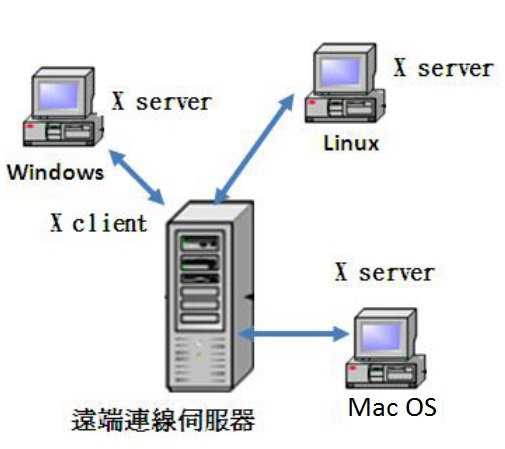
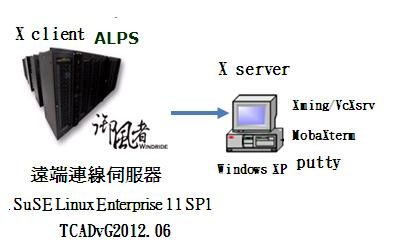
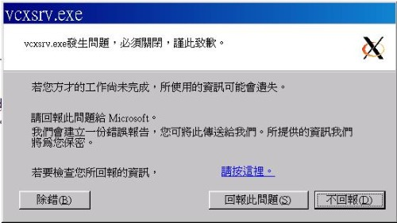
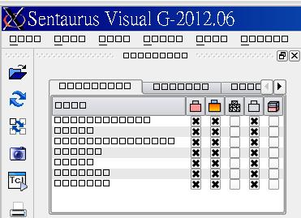
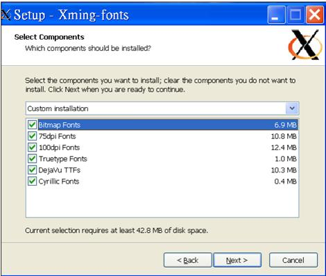
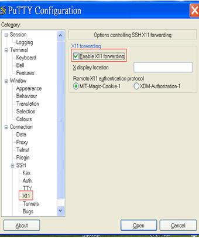
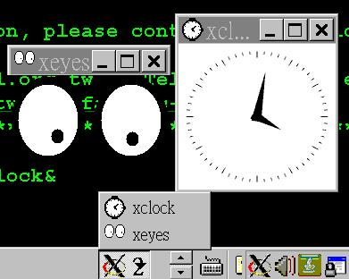

也紀念我們永遠的朋友 李士傑先生（Shih-Chieh Ilya Li）。
Xserver 的介紹與應用
作者簡介：陸聲忠，國立成功大學土木工程研究所，現任職於國家高速網路與計算中心。
Linux 的特性與優點：
相較於「某知名廠商」的作業系統，Linux 具有以下的特性與優點：
1.系統比較穩定：Linux 是以 Unix 系統為根本所發展出來的作業系統，因此與其不但有相似的程式介面跟操作方式，同時也承襲其穩定與有效率的特點。有時一台 Linux 主機可連續運作一年以上都 不曾當機、也不需要關機，都是常有的事。
2.免費或僅需少許費用：由於 Linux 是基於 GPL 授權基礎下的產物，因 此任何人皆可以自由取得 Linux，至於一些「安裝套件」的發行者所發行的安裝光碟也僅需要些許費用即可獲得。不同於 Windows，使用者需要不斷的更新系統，並且還要繳納高額的費用。
3.安全性、漏洞的修補：在網路的世界中最常聽到的一句話應該就是「沒有絕對安全的主機」，不過由於 Linux 支援者日眾，有相當多的熱心團體、個人參與其中的開發，因此可以隨時獲得最新的安全資訊，並給予即時的更新，這意謂著其具有相對的安全性。
4.使用者與群組的規劃：在 Linux 主機上，檔案的屬性可以分為「可讀、可寫、可執行」等參數來定義一個檔案的使用權限 (permission)，此外，這些屬性還可針對為三種身份來設定，分別是「檔案擁有者」、「檔案所屬群組」、「其他非擁有者與群組者」。這對於專案計畫或者其他計畫開發者具有相當良好的系統保密性。
5.多工、多使用者：與 Windows 系統不同的是，Linux 主機可以允許多人同時上線來工作，如此系統資源在分配上不但較公平，也較能充被利用，不浪費。比起 Windows 的單人偽多工系統要實用多了！這個多人多工的特點可說是 Unix-Like 系統上一個相當強的功能，因為我們只要在一台 Linux 主機上面建立不同權限等級的使用者，而且每個使用者登入系統時的工作環境都也不盡相同，此外，還可以允許不同的使用者在同一個時間登入主機，並同時使用主機的資源。
6.較不浪費系統資源及且方便管理：由於可允許多人同時使用，因此系統的資源較能被充份利用，這與多台主機多作業系統相比，較不浪費系統資源，只要根據使用者數量及需求（如 cpu 數、記憶體大小、磁碟空間大小）就可以決定伺服器的規格，由於只有一台主機，一套作業系統，管理起來自然輕鬆多了。
遠端連線伺服器
「遠端連線伺服器」如 同一般伺服器（如 mail or web）一樣，都是提供服務的，而兩者最大不同之處就是前者可允許一般使用者藉由遠端登入程式（如 ssh）直接進入主機來使用應用軟體，一般遠端登入程式，多以文字模式顥示，而大多數的應用軟體則需要用到圖形介面 (Graphical User Interface, GUI) 來操作，所以當你想要用桌機來使用「遠端連線伺服器」上的應用軟體時，除了要有遠端登入程式外還必須安裝 Xserver 軟體 ，這也就是本文之主題。
X Window系统
X Window 系统（X Window System，也常稱為 X11 或 X）是一種以點陣圖方式顯示的軟體視窗系統。最初是 1984 年麻省理工學院的研究，之後變成 UNIX、類 UNIX、以及 OpenVMS 等作業系統所一致適用的標準化軟 體工具套件及顯示架構的運作協定。X Window 系统透過軟體工具及架構協定來建立作業系統所用的圖形化使用者介面，此後則逐漸擴展適用到各形各色的其他作業系統上。現在幾乎所有的作業系統都能支援與使用 X。更重要的是，今日知名的桌面環境——GNOME 和 KDE 也都是以 X Window 系统為基礎建構成的。
由於 X 只是工具套件及架構規範，本身並無實際參與運作的實體，所以必須有人依據此標準進行開發撰寫，如此才有真正可用、可執行的實體，始可稱為實現體。目前依據 X 的規範架構所開發撰寫成的實現體中，以 X.Org 最為普遍且最受歡迎。X.Org 所用的協定版本，X11，是在 1987 年 9 月所發佈。而今最新的參考實作（參考性、示範性的實作體）版本則是 X11 Release 7.7（簡稱：X11R7.7），而此專案由 X.Org 基金會所領導，且是以 MIT 授權和相似的授權許可的自由軟體。
X Window 運作架構
X Window 是採用主從式架構，將應用程式的運算處理與顯示功能劃分為兩個部份，也就是 X Client與 X Server。
X Server 是控制本機端輸出與輸入設備的程式，負責螢幕上圖形之顯示，並驅動滑鼠及鍵盤等輸入設備，讓使用者可以透過這些輸入輸出介面，達到與應用軟體式互動的目的。
在家裡或小辦公室環境中，通常 X server 跟 X client 都是在同一台電腦上執行的。 然而也可以在效能較差的桌機上執行 X server，而將應用軟體安裝在效能比較強、比較貴的遠端伺服器上並執行 X 程式 (client) 來做事情。 在這種場景下，X client 與 server 之間的溝通就需透過網路來進行。
這點可能會讓人產生困惑，因為 X 術語與一般人原本的認知剛好相反。他們多半以為 X server 是要在遠端伺服器上執行的，而 X client 則是在他們的桌機上執行的。實際上剛剛好相反。
簡單的說，X server 是在有接螢幕、鍵盤的機器上運作的，而 X client 則是運行在裝有應用軟體之遠端連線伺服器上的。
舉個例子來說，當我們在 X Window 的畫面中，將滑鼠向右移動時，X server 偵測到滑鼠的移動，便將滑鼠的這個動作告知 X Client，X Client 就會去運算，然後將這個結果告知 X server ，接下來，就會看到 X Server 將滑鼠指標向右移動了。
這樣做的好處就是，X Client（遠端伺服器）不需要知道 X Server（本機端）的硬體配備與作業系統。因為 X Client 單純就是在處理繪圖的資料而已，本身是不繪圖的。所以根本就不需要知道本機端 (X Server) 用的是什麼硬體和作業系統。 整個 X Window 運作架構如圖一所示。

▲圖一：X Window 運作架構。
Windows 作業系統上的 X Server 軟體
由於 Windows 作業系統上並沒有提供預設的 X server，如有需要使用者必須自行下載安裝。目前 Windows 作業系統上常見的 X server 軟體有以下幾個：
-
Hummingbird Exceed ：是一套商業軟體，就是要付費的，而且設定起來好像也蠻複雜的，在此就不多說了。
-
X-win32：是一套由 starnet 公司所在 Windows 作業系統上開發的 X Server 軟體，因為也是一套付費程式，這裡也就不多說了，有興趣的人可下載試用版來玩玩。
-
Xming ：基於 X.org X server 編譯，檔案並不大，也不包含別的東西，還帶了一個嚮導介面 (XLaunch)。雖然很小，不過該有的功能都有了。只是有個小小的問題，就是新版本的 Xming 並不是免费的，不過作者要求的並不是購買而是捐赠，如不捐贈就無法下載到新版本，免費下載的只有一個 2007 年的 6.90.31 版本。筆者因為工作的關係，常會利用 Xming 來使用很多各式各樣 Linux 版的應用軟體，截至目前為止無法開啟的軟體不會超過 5 個 ，所以這個老版本基本上來說是夠用的。使用此軟體所需下載安裝的檔案有二個，如後所示︰Xming-6-9-0-31-setup.exe 或 Xming-mesa-6-9-0-31-setup.exe（擇一即可）、Xming-fonts-7-5-0-34-setup.exe，其中 Xming-mesa-6-9-0-31-setup.exe 支援 openGL，由於它只提供了 X server，並沒有提供遠端登入程式（如 ssh），因此還要安裝一個終端機模擬軟體（如 putty）並且使用時還必須勾選 X11 forwarding 檢核方框（check box），這些對新手來說可能有點難度。以上是一位 MobaXterm 愛好者的說法，筆者並不認同，理由將在 putty + Xming 設定與使用一節中說明。
-
VcXsrv：如果你需要最新版的 X.org X server, 可以試試 VcXsrv，它的用使用方式法和長相和 Xming 幾乎是一樣的，同樣带有 VcXsrv 的嚮導 (XLaunch），不過只需要下載安裝vcxsrv.1.10.1.0.installer.exe 程式即可。
-
MobaXterm：又名 MobaXVT，是一款增強型終端、視窗，以最新的 X.Org 為基礎的 X Server，可以輕鬆地來試用 Unix / Linux 上的 GNU Unix 命令。增強型終端 MobaXterm_v7.0.zip（可攜式版）裡面包含了bash 和眾多 posix 小工具（其實都是busybox）、openssh、X server，其實它是基於 Cygwin 打包而成的，啟動時會動解壓到臨時目錄，不過速度還是蠻快的。提供 gcc, perl, python, svn, git, emacs, vim 等 20 多個外掛程式，每個外掛程式也都是一個單一檔，攜帶、共用很方便（其實外掛程式是一個 zip 檔,對 Cygwin 比較瞭解的人很容易自己製作外掛程式），如果您之前就有使用 putty，當第一次啟動時便會匯入 putty 所有 session 及其設定。下載安裝的檔案為 MobaXterm_Setup_7.0.msi（安裝版），MobaXterm_v7.0.zip（可攜版）。
X Server 之比較
由於 MobaXterm、VcXsrv、Xming 這些軟體基本上都是部份免費的，所以我們直接拿一個應用軟體 (Sentaurus TCAD) 其中的 3 個模組(feature) 來進行測試，以了解不同模組利用不同的 X Server 軟體來開啟之結果，其中這 3 個模組分別是 Workbench (swb), Structure Editor (sde), Visual(svisual)。整個測試環境如圖二所示，其中，遠端連線伺服器為網中心的 ALPS 超級電腦，其作業系統為 SuSELinux Enterprise 11 SP1，應用軟體為 TCADvG2012.06，筆者電腦的作業系統則為 Windows XP。

▲圖二︰X Server 比較測試環境示意圖。
使用 MobaXterm、VcXsrv、Xming 均可正常開啟 Workbench(swb)。MobaXterm 則無法開啟 Visual (svisual)，並出現以下訊息：
Enforcing MESA version because GLX is missing.
/pkg/em/sentaurus/G\_2012.06/tcad/current/suse64/lib/svisual\_exec:
error while loading shared libraries: libImath.so.6: cannot open shared
object file: No such file or directory
VcXsrv 則無法開啟 Structure Editor (sde)，並出現如圖三之錯誤訊息畫面︰

▲圖三︰VcXsrv 開啟 sde 時出現之錯誤訊息畫面。
MobaXterm、VcXsrv、Xming 均可開啟 Structure Editor (sde)，不過使用 Xming 卻會出現 lag 現象，這個問題只要撰擇安裝 Xming-mesa-6-9-0-31-setup.exe 即可改善。
VcXsrv、Xming 均可開啟 Visual (svisual)，不過使用 Xming 可能會出現無法顥示文字的問題，如圖四。

▲圖四︰Xming 開啟 svisual 畫面。
只要在安裝字型時注意一下，在選擇 components 時選擇自訂安裝，並勾選所有字型，即可解決，如圖五。

▲圖五︰安裝字型時選擇自訂安裝畫面。
putty + Xming 設定與使用
從 X Server 之比較一節中，可以發現使用 Xming 碰 到的問題比較少，所以特別針對 Xming 的設定與使用加以說明，由於它並沒有提供端登入程式（如 ssh），所以還必須下載一個終端機模擬軟體（如putty），之所以選擇 putty，主要是它的「複製貼上」非常好用，只要用滑鼠左鍵選取欲複製之範圍，再按下滑鼠右鍵即可，有關 putty的設定可參閱這裡，在此就不再贅述了。不過有一個設定是非常重要的就是一定要記的勾選 X11 forwarding 檢核方框 (check box) 如圖六。如果你要同時管理多台主機或使用多台主機進行計算，為避免登入前須進行繁複的設定。您可以先先建立一個 session 並完成所有設定，然後以此為範本，先載入(Load) 此 session，再修改 IP 及名稱、再儲存 (Save) 即可。

▲圖六︰puttyX11 forwarding 設定。
Xming 並不需要做什麼特殊設定，最好是安裝 Xming-mesa-6-9-0-31-setup.exe 還有在安裝字型時，在「選擇 components」時選擇「自訂安裝」，並勾選所有字型，如圖五。使用起來也相當簡單，只要執行Xming， 這時在工作列就會出現一個大 X，然後再利用 putty 登入遠端連伺服器，輸入啟動應用軟體指令即可。圖七為對一台伺服器同時啟動兩個程式；同樣的也可以對多台伺服器同時啟動多個程式。

▲圖七︰一台伺服器同時啟動兩個程式。
Xming 設定檢測除錯
Putty 有一個設定是非常重要的那就是「勾選 X11 forwarding 檢核方框 (check box)」如圖六。如果忘了勾選，就會出現以下錯誤訊息，以 echo \$DISPLAY 檢查，若無任何輸出，表示本機端之 putty 未勾選 X11 forwarding 檢核方框。若有勾選，那就是「遠端連線伺服器」之sshd_config 檔案中之 X11Forwarding 未設定為 yes。
a00scl00@alps6:\~\> xeyes&
[1] 38863
a00scl00@alps6:\~\> Error: Can't open display:
a00scl00@alps6:\~\> echo \$DISPLAY
a00scl00@alps6:\~\>
若有勾選且 sshd_config 也設定無誤，但仍出現以下錯誤訊息，則表示本機端未啟動 Xming。
a00scl00@alps6:\~\> xeyes
Error: Can't open display: localhost:23.0
如果 Xming 有啟動，卻出現類似以下訊息，還有一個可能就是遠端伺服器上使用者家目錄沒有足夠的空間，讓應用軟體能成功啟動。
xterm Xt error: Can't open display: localhost:22.0
結論
由於 Linux 主機的高穩定性，所以很多的應用軟體都會選擇在上面開發，透過，Xserver 及終端模擬器便可讓許多人同時利用桌機上線來工作，本文主要介紹了 3 個 Xserver。分別是︰MobaXterm、VcXsrv 及 Xming。並拿 (Sentaurus TCAD) 的 3 個模組 (feature) 來進行測試，觀察不同模組利用不同的 X Server軟體來開啟之結果，其實這不意謂熟劣熟優，讀者可根據您使用的應用程式，來選擇適合的 Xserver，另外又提供一些偵錯及修正的方法，希望對 各位在從事計算工作時能有所助益。
Special


Address：No.128, Sec.2, Academia Rd., Institute of Information Science, Academia Sinica, Nangang District, Taipei City 11529, Taiwan (R.O.C).
Privacy Policy. Terms-of-use